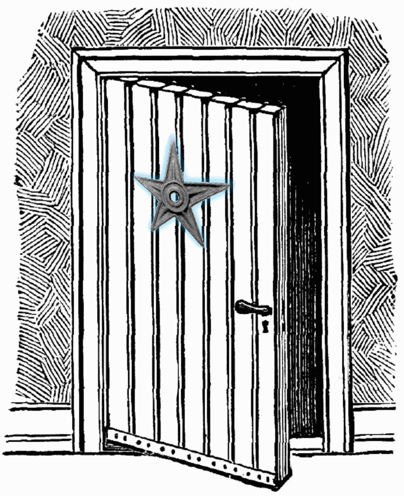

A js functions is a block of code designed to perform a particukar task.(function and fat arrow function) fat arrow function -Arrow functions allow us to use the fat arrow => operator to quickly define JavaScript functions, with or without parameters.
